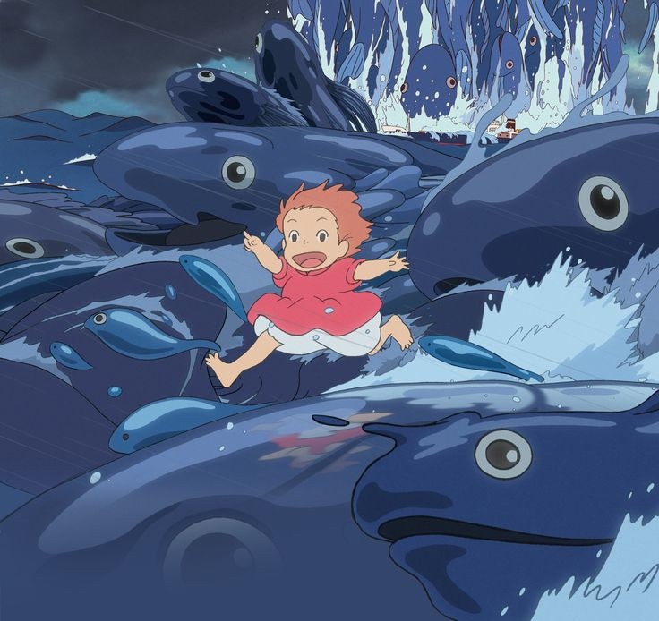
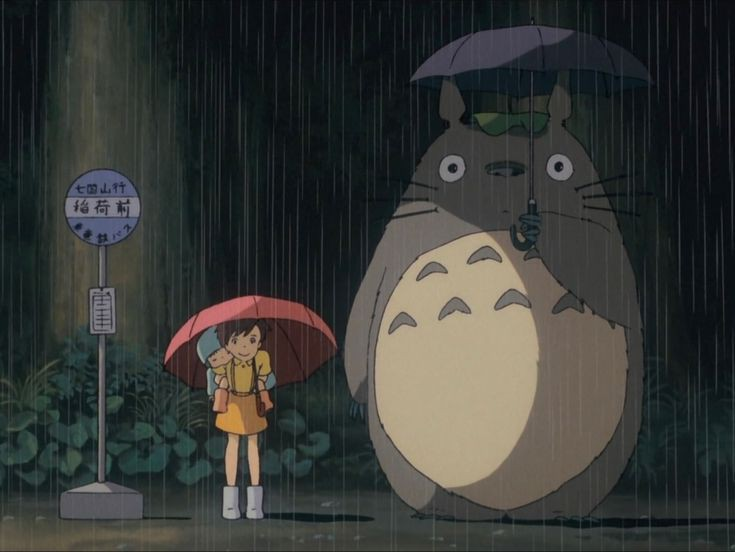
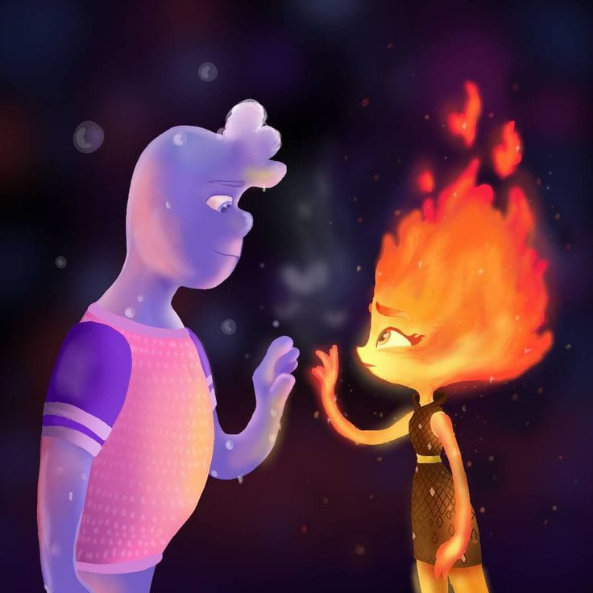

| NO | JUDUL FILM | POSTER | SINOPSIS | LINK FILM | TAHUN RILIS |
|---|---|---|---|---|---|
| 1 | PONYO |  | Film "Ponyo" dari Studio Ghibli, yang disutradarai oleh Hayao Miyazaki, bercerita tentang Ponyo, seorang putri ikan emas yang ingin menjadi manusia setelah dia menyelamatkan seorang anak laki-laki bernama Sosuke dari tenggelam. Ponyo melarikan diri dari laut dan berubah menjadi manusia, menyebabkan ketidakseimbangan di dunia dan ancaman bencana alam. Sosuke dan Ponyo harus menghadapi berbagai tantangan untuk mengembalikan keseimbangan dan memastikan bahwa cinta mereka bisa bertahan. Film ini terkenal dengan animasinya yang indah dan ceritanya yang penuh keajaiban. | tontonan trailer | 2008 |
| 2 | MY NEIGHBOR TOTORO |  | Film "My Neighbor Totoro" karya Studio Ghibli, disutradarai oleh Hayao Miyazaki, menceritakan kisah dua saudara perempuan, Satsuki dan Mei, yang pindah ke desa di pedesaan Jepang bersama ayah mereka setelah ibunya jatuh sakit. Di desa tersebut, mereka menemukan makhluk-makhluk ajaib, termasuk Totoro, roh hutan besar yang ramah. Totoro dan teman-temannya membantu mereka menghadapi kesulitan yang mereka hadapi, termasuk kesehatan ibunya yang semakin memburuk. Film ini terkenal dengan suasana yang hangat dan pesonanya yang magis, menyoroti tema keluarga, keajaiban, dan alam. | tontonan trailer | 2021 |
| 3 | ELEMENTAL |  | Film animasi "Elemental" dari Pixar, yang dirilis pada tahun 2023, berlatarkan dunia di mana elemen seperti api, air, tanah, dan udara memiliki wujud manusia dan hidup berdampingan. Cerita ini berfokus pada Ember Lumen, seorang wanita api, dan Wade Ripple, seorang pria air. Ember, yang memiliki temperamen yang kuat dan terampil dalam api, bertemu dengan Wade yang tenang dan cenderung melawan arus. Meskipun berasal dari elemen yang sangat berbeda dan memiliki pandangan yang berbeda tentang dunia, mereka membangun persahabatan dan akhirnya saling memahami. Film ini mengeksplorasi tema keberagaman, toleransi, dan bagaimana kita dapat saling melengkapi meski berbeda latar belakang. | tontonan trailer | 2023 |